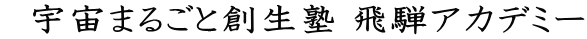

| 2004年5月8日 | 第２回実行委員会を開催しました。 前回の会議からの経過報告、受講生募集等について、討議しました。 |
| 2004年 7月11日 | 第3回実行委員会を開催しました。 前回から約2ヶ月間ありますが、この間、役員会やＥメール・郵便で 準備が進み、会議では細かい日程・役割分担も決まりました。 |
| 2004年9月11日 | 第4回実行委員会を開催しました。 プレセミナーの反省と2005年度に向けての準備について 検討しました。 |
| 2004年11月28日 | 第5回実行委員会を開催しました。 １．NPOについて、具体的な段取り等についての検討 ２．2005セミナーの基本計画の承認 ３．実行委員会体制の検討 |
| 2005年7月6日 |
第8回実行委員会を開催しました。 2005夏セミナーまで1ヶ月。 準備の話し合いが行われました |
| 2005年9月22日 飛騨市古川町 総合会館 |
第9回実行委員会 １．2005夏セミナーの報告書・決算書が承認されました。 ２．2006春セミナーの概要が決まりました。 2006．3．24，25，26うちの2日間。一泊二日 飛騨地域の高校生または同等の年齢の者 実業界の専門家を中心にした講師 ３．実行委員会の体制の変更 |
| 2005年10月15日 飛騨市神岡町 船津座 |
拡大役員会 １、2006春セミナーの日程、開催場所が決まりました。 ・2006．3.25（土）〜3.26(日） ・飛騨市古川町 季古里にて ・飛騨地域（通学・在住・出身）の高校生または同等の 年齢のもの ２、ミニ公開講座の開催が決まりました。 11月後半を予定しています。 |
|
2006年9月22日 |
第１３回実行委員会 １．２００６夏セミナーの総括 ２．２００７夏セミナーの日程確認 ３．１０・２２小柴先生の講演会について |
| 2007年2月24日 飛騨市古川町 総合会館2Ｆ |
第14回実行委員会 １．2007春セミナー概要。詳細日程について 2007年3月24日（土）〜25日(日）開催 飛騨市河合町 やまびこ館 中学生・高校生同等の年齢30名 ２．2007夏セミナーについて準備状況 |
| 2007年5月8日 飛騨市古川町 飛騨市役所会議室 |
第15回実行委員会 １．2007夏セミナーについて 受講生募集を5月20日より開始します。 ２．規約の改正が承認されました。 市役所の組織替えや実行委員の変更に伴う名称の変更です。 ３・ＳＳＨ誘致事業について議論されました。 |
| 2007年9月21日 飛騨市古川町 飛騨市役所1Ｆミーティングルーム |
第17回実行委員会 １．2007夏セミナー報告書が承認されました。 ２．2008春セミナーについて 2008年3月29日(土）〜30日(日） 飛騨市河合町 やまびこ館 中学生・高校生・同等の年齢30名 ３．2008夏セミナーの日程が決まりました。 2008年8月7日(木）〜10日(日） ４．ハロルド・クロトー氏の講演会について |
| 2007年11月2日 飛騨市古川町 飛騨市役所会議室 |
第18回実行委員会 １．体制の変更に伴い、ゆめたまの委員長・副委員長が改選され承認されました。 ２．2008春セミナーについて 交渉中を含め、講師がほぼ決まりました。 ３．2008夏セミナーについて 講師候補者が決まりました。 ４．ハロルド・クロトー氏の講演会の日程が決まりました。 2008年7月15日 午後 ５．新委員長、副委員長の挨拶 |
| 2008年2月23日 飛騨市古川町 総合会館3階和室 |
第19回実行委員会 １．2008春セミナーについて 講師紹介と応募状況報告 ２．2008夏セミナーについて 日程と進行状況の報告 ３．実行委員会の体制 各部の長が改選され承認されました。 ４．ハロルド・クロトー氏の講演会について |
| 2008年5月16日 飛騨市神岡町 神岡振興事務所4Ｆ |
第20回実行委員会 １．予算等について報告 ２．2008夏セミナーについて 受講生の募集が5月20日から始まります。 ３．飛騨アカデミー5周年記念公開講座について ４．2009春セミナーについて 講師候補者について |
| 2008年7月12日 飛騨市古川町 飛騨市役所3F委員会室 |
第21回実行委員会 １．予算等について報告 ２．2008夏セミナーについて 日時･会場・募集定員達した件・役割分担 公開講座について ３．5周年記念公開講座について ４．2009春セミナーについて 講師候補者について ５．その他 |
| 2009年1月25日 飛騨市神岡町 神岡振興事務所4Ｆ |
第22回実行委員会 １、予算などについて報告 ２、2009春セミナーについて 日時・会場の件 受講生の募集が1月26日から始まります。 ３、「岐阜大学地域科学部・飛騨の郷講演会」について ４、ＧＳＡサイエンスカフェについて |
| 2009年5月2日 飛騨市神岡町 神岡振興事務所4Ｆ |
第23回実行委員会 １、2008年度報告 ２、2009夏セミナーについて ３、その他 |
| 2010年3月14日 飛騨市神岡町 神岡振興事務所4Ｆ |
第24回実行委員会 １、2010春セミナーについて ２、2010夏セミナーについて ３、決算、予算について報告と今後について ４、その他 |
| 2010年9月24日 飛騨市神岡町 神岡振興事務所4Ｆ |
第25回実行委員会 １、2010夏セミナー反省＆提案 ２、2011春セミナーについて ３、2011夏セミナーについて ４、その他 |
| 2011年2月13日 飛騨市神岡町 神岡公民館3F大会議室 |
第26回実行委員会 １、2011春セミナーについて ２、2011夏セミナーについて ３、今後の運営について ４、その他 |
| 2011年7月25日 飛騨市神岡町 神岡振興事務所4F |
第27回実行委員会 １、2011夏セミナーについて |
| 2011年10月8日 飛騨市神岡町 神岡振興事務所4F |
第28回実行委員会 １、2012春セミナーについて ２、2012夏セミナーについて ３、今後の体制について |
| 2012年3月10日 飛騨市神岡町 花の家 |
拡大役員会 １、春セミナー現状報告 2、夏セミナーについて 講師・定員・募集範囲 ３、10年後以降のゆめたま ４、人事 ５、賛助会員 ６、その他 |
| 2012年11月2日 飛騨市神岡町 神岡振興事務所4Ｆ |
役員会 １、10周年記念講演会 ２、ＧＳＡサイエンスカフェについて ３、2013春セミナー ４、2014夏セミナー ５、その他 |
2012年12月14日 飛騨市神岡町 船津座 |
第29回実行委員会 1、 10周年記念講演会 日時・会場・講師 ２、2013春セミナー ３、その他 |
| 2013年7月26日 飛騨市神岡町 神岡振興事務所４Ｆ 事務局 |
第30回実行委員会 １、2013夏セミナー 日時・会場・講師の検討 ２、その他 |


|  |
|
||||||||